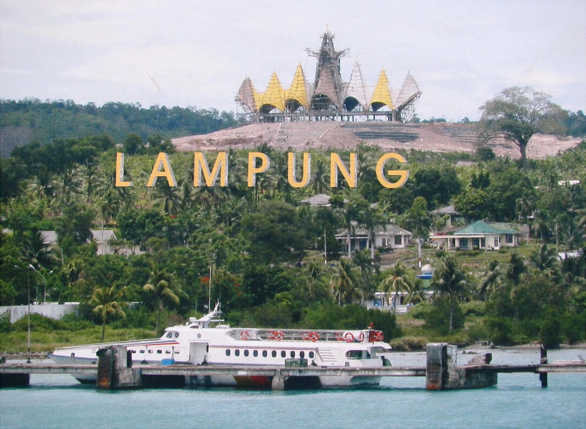
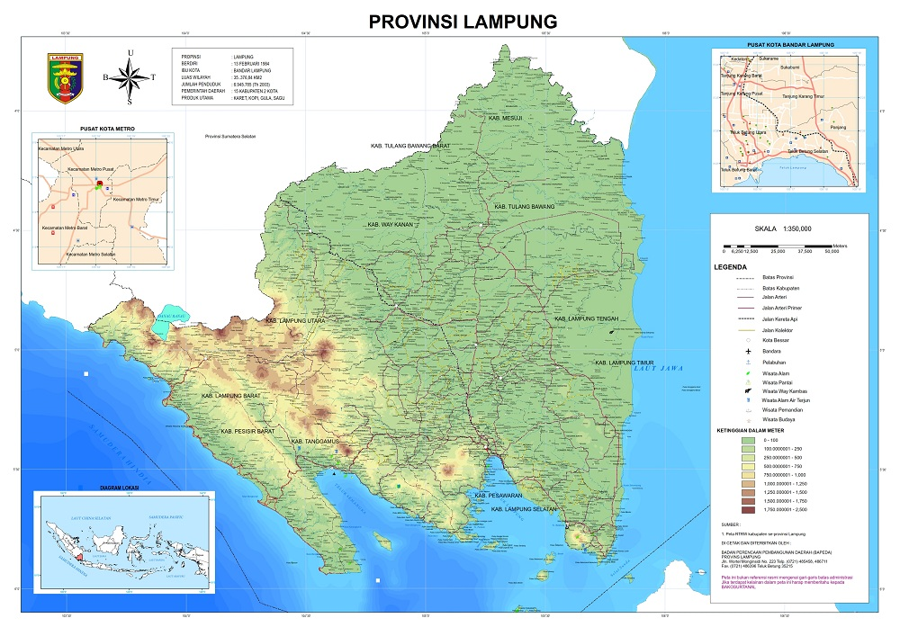

Sejarah

Nama Lampung diperkirakan berasal dari kata "Lampung" dalam bahasa setempat yang merujuk pada letak geografisnya yang berbukit-bukit atau ketinggian. Berdasarkan catatan sejarah dan prasasti, wilayah Lampung dulunya berada di bawah pengaruh kerajaan-kerajaan besar seperti Sriwijaya dan Banten, sebelum akhirnya masuk dalam masa kolonialisme.
Dalam perkembangannya, Lampung juga menjadi salah satu daerah tujuan transmigrasi utama yang menjadikan provinsi ini dihuni oleh keanekaragaman suku bangsa dan budaya yang hidup berdampingan secara harmonis.
Geografis

Secara geografis, Provinsi Lampung terletak di ujung tenggara Pulau Sumatra. Wilayahnya berbatasan langsung dengan Provinsi Sumatra Selatan dan Bengkulu di sebelah utara, Selat Sunda di sebelah selatan, Laut Jawa di sebelah timur, serta Samudra Hindia di sebelah barat.
Topografi wilayah Lampung bervariasi mulai dari dataran rendah, perbukitan bagian dari Bukit Barisan, hingga garis pantai yang panjang serta teluk-teluk besar yang kaya akan potensi kelautan.
Wisata
Sebagai salah satu destinasi wisata favorit di Sumatra, Lampung menawarkan berbagai keindahan alam mulai dari bahari hingga konservasi satwa liar yang mendunia.